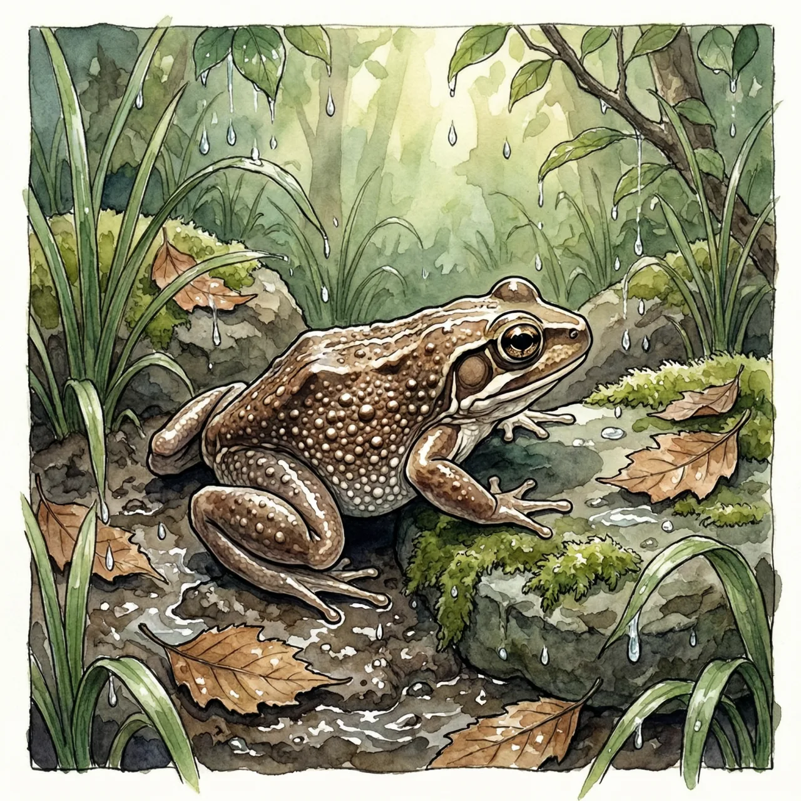
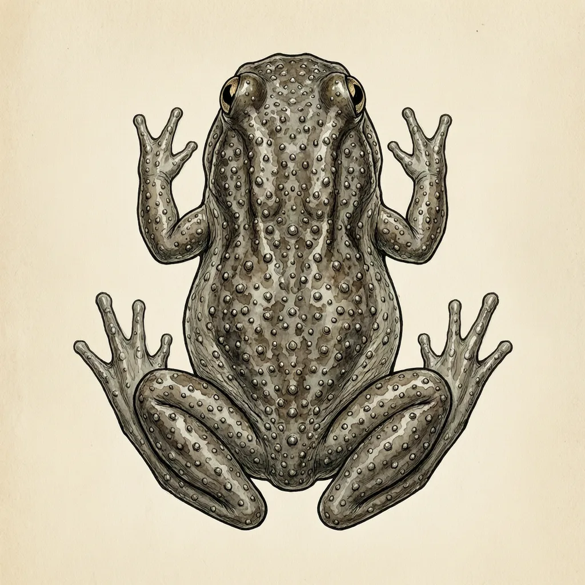

布桑加巴蟾是无尾目铃蟾科巴蟾属的成员，只分布在菲律宾，生活在潮湿地带，栖息地正在受到威胁。整个巴蟾属已知只有两个种：布桑加巴蟾在菲律宾，另一种加都巴蟾在印尼的婆罗洲，两片陆地隔着很远的海。
布桑加岛在菲律宾西部，紧靠巴拉望岛的北端；这个岛名是布桑加巴蟾已知分布地点之一。锚文给出的整个家域就是菲律宾——它是这个国家的特有种，别的国家没有记录。中文维基这条目很短，生境只写了潮湿地带四个字，能确定的是它离不开这种湿润环境。目前它的栖息地正在受到威胁。
巴蟾属已知只有两个种。另一支是加都巴蟾，分布在印度尼西亚的婆罗洲，同样是濒危物种。两支各占一片隔着远海的陆地：一支在印尼的大岛上，一支在菲律宾。潮湿的栖息地是这两支共有的前提，属里剩下的区别主要是头体形态。就分布本身而言，布桑加巴蟾守住的是菲律宾这一角，终生不离水边。
铃蟾科在人们印象里通常是欧洲那类圆胖的陆栖小蟾蜍。巴蟾属完全不合这个模板：布桑加巴蟾的头扁，头与躯干像被压平了一块，四肢短，整个身体贴地，又离不开潮湿的环境。一个科里怎么会同时住着陆栖的圆胖蟾蜍和扁头的湿生种类，锚里没有交代。属级资料还记着它们没有肺、靠皮肤换气，这份锚文里没有相应证据。
